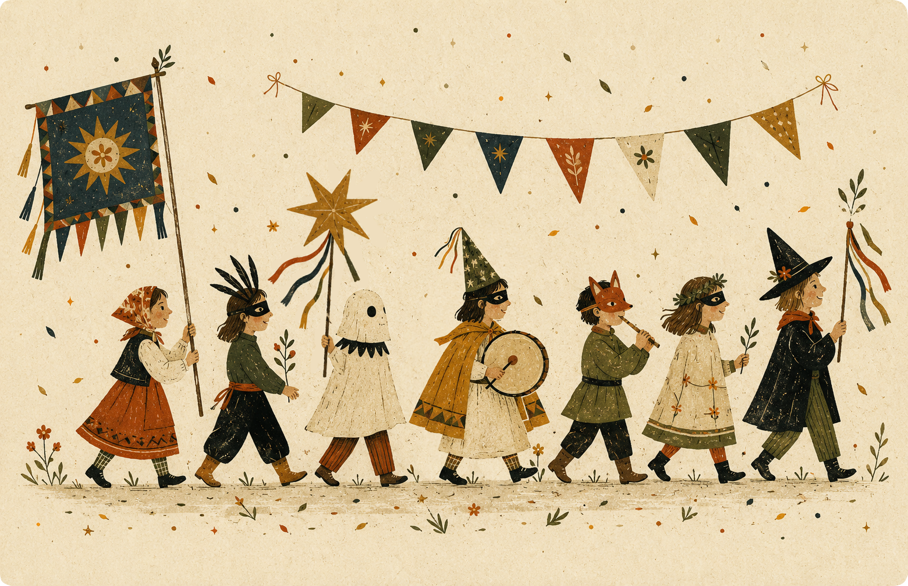
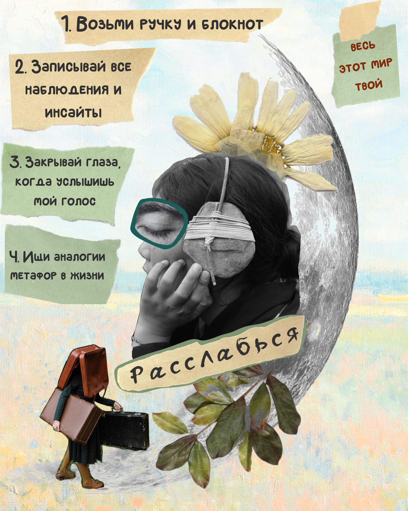
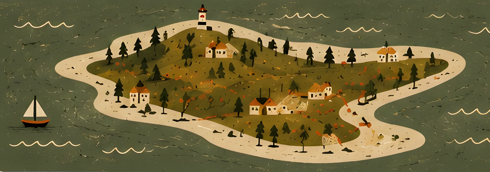
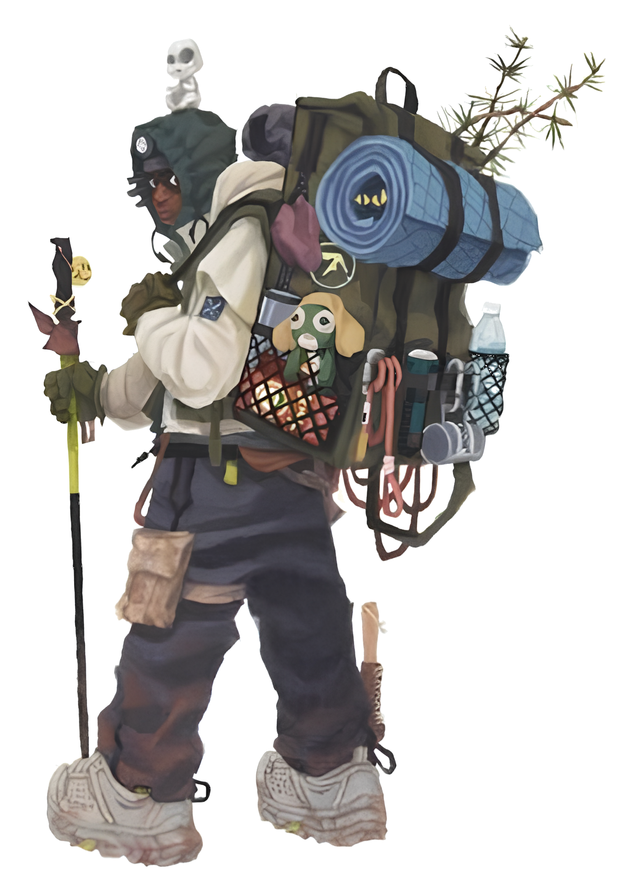
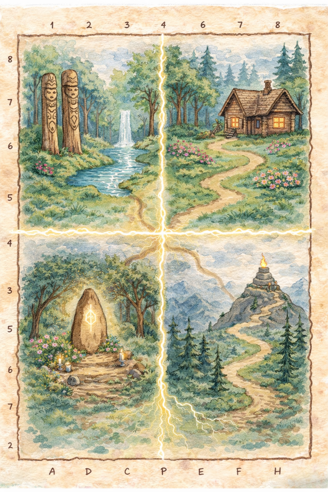
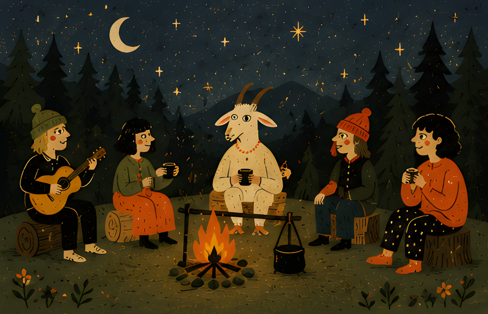

в мир игры «Жить = Творить»

Это трансформационная игра — она помогает через бессознательное найти ответы на те вопросы, которые обычными способами не разрешаются. Но эта игра не похожа на остальные: тут нет вопросов и заданий. Вы просто отправляетесь в путешествие и наблюдаете — за собой, за тем, что происходит вокруг, и за своими чувствами и воспоминаниями.
Вы сейчас находитесь в ознакомительной демо-версии. Она поможет вам познакомиться с этим миром и попробовать, как это — попасть в фантазию.


Легенда гласит, что обойдя этот остров полностью, люди меняются навсегда. Я же подготовила для вас тур по четырем значимым местам.
К любому путешествию необходимо подготовиться и собрать все мысли в кучку, и наше — не исключение.

Исследуйте карту, нажимая на каждую область поочередно, и следуйте за голосами: моим и своим внутренним

Запишите свои наблюдения и то, что вам особенно запомнилось: к себе в блокнот или в поле ниже.

В полной версии вас ждут новые места, неожиданные встречи и маршрут, который рождается уже из вашей личной истории.
что нужно знать о полной версии
Если захочется, поделитесь тем, что оказалось самым важным в этом путешествии: мне интересен каждый путь
Сделай короткую паузу и зафиксируй инсайты: в заметки или вслух для себя